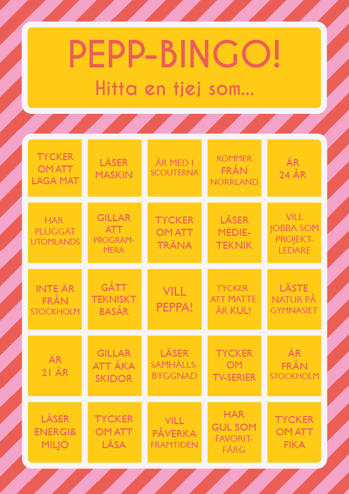
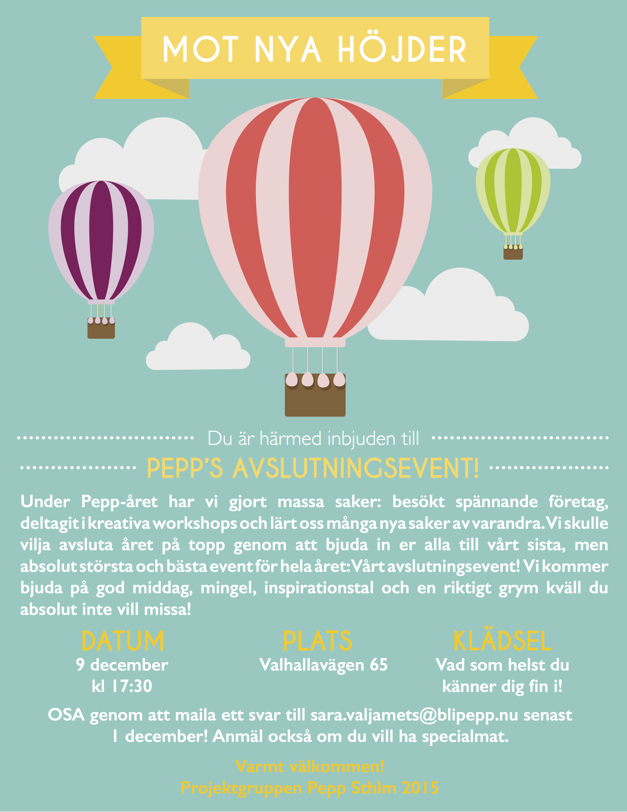
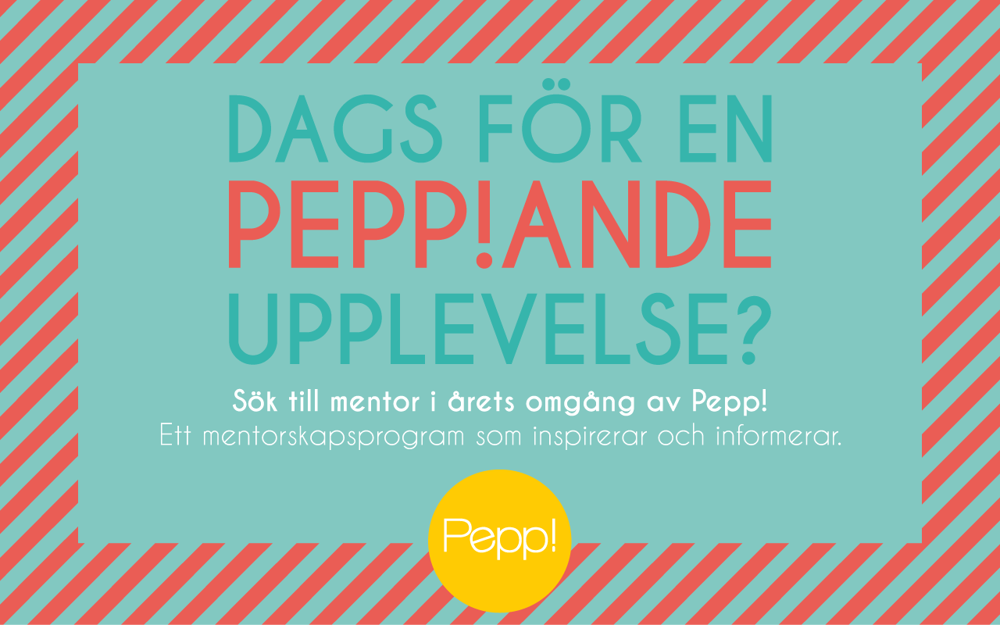
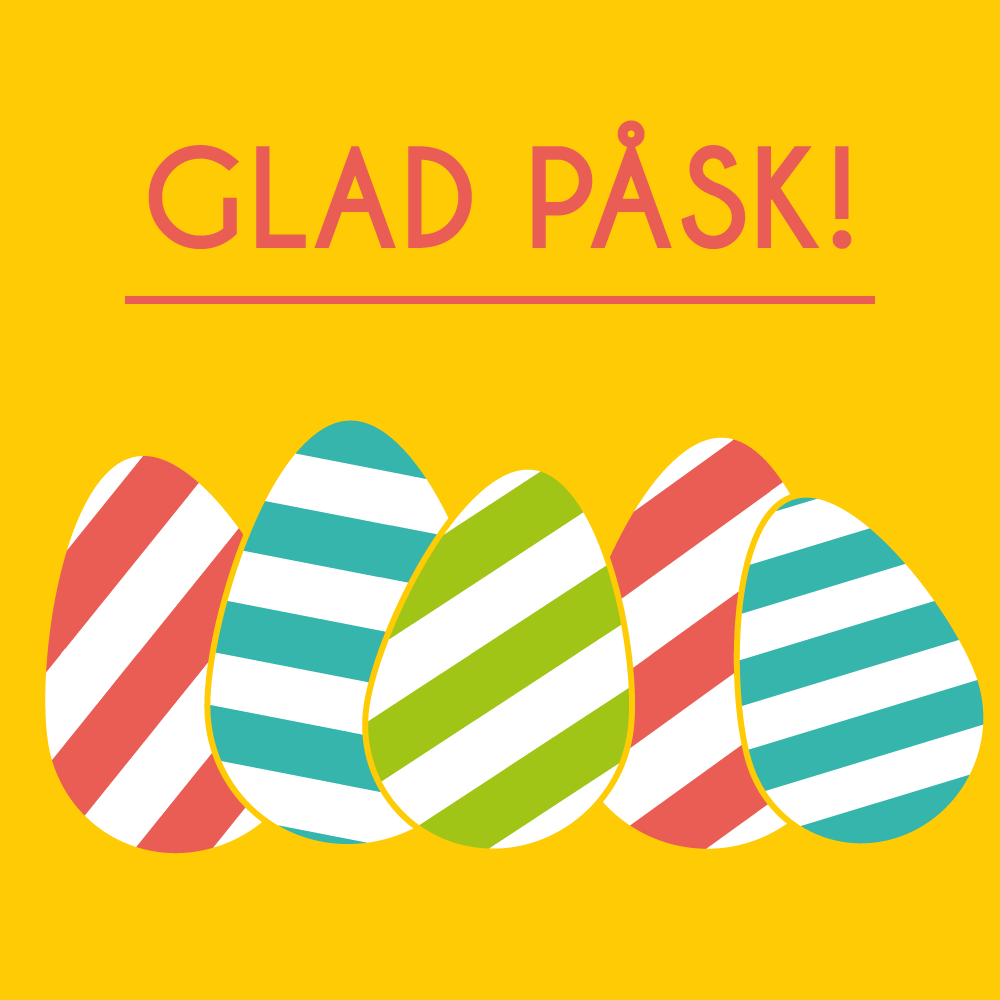
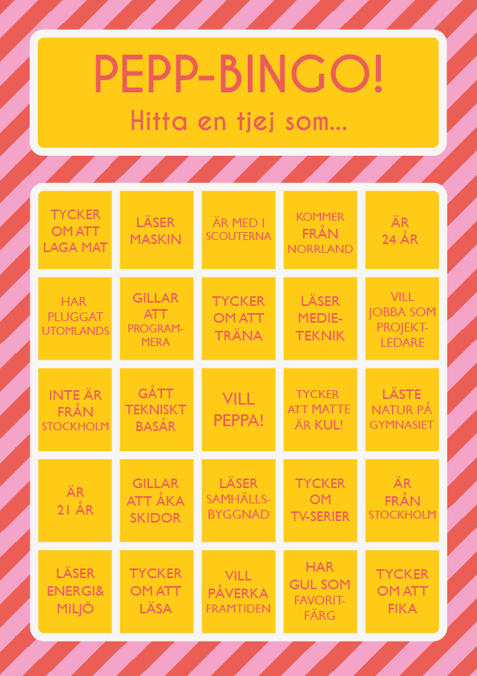
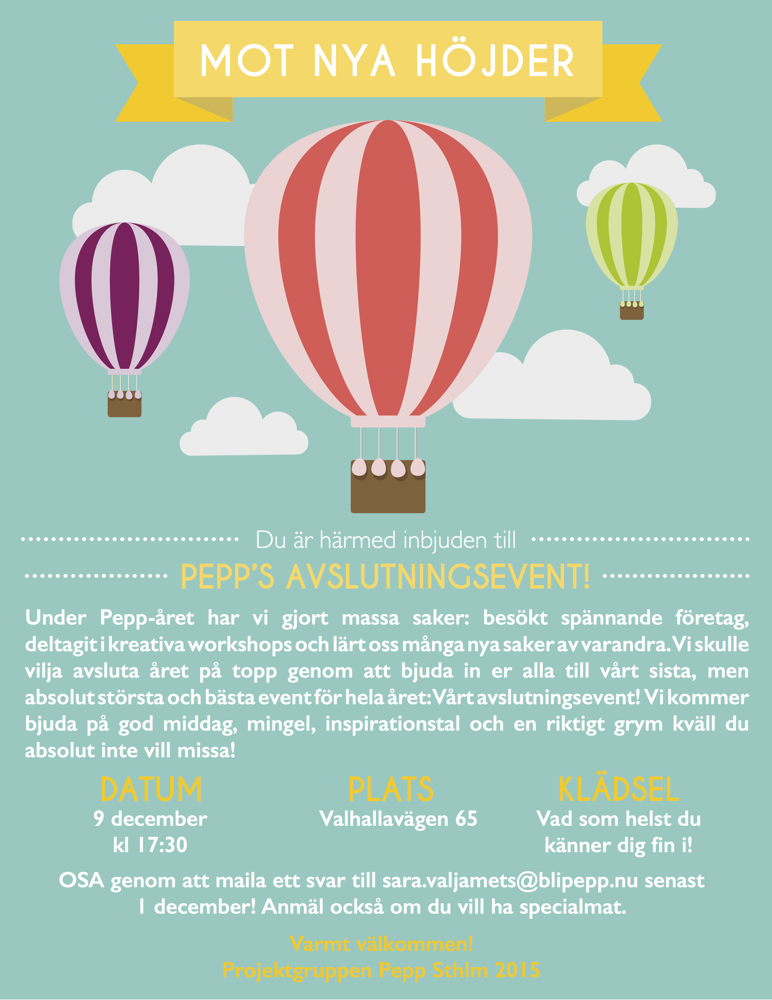
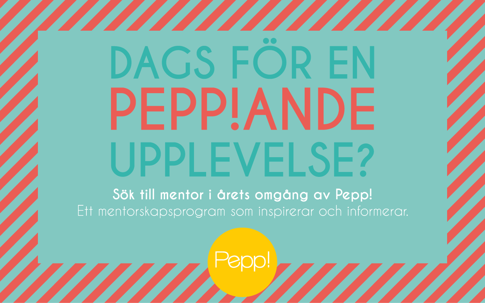
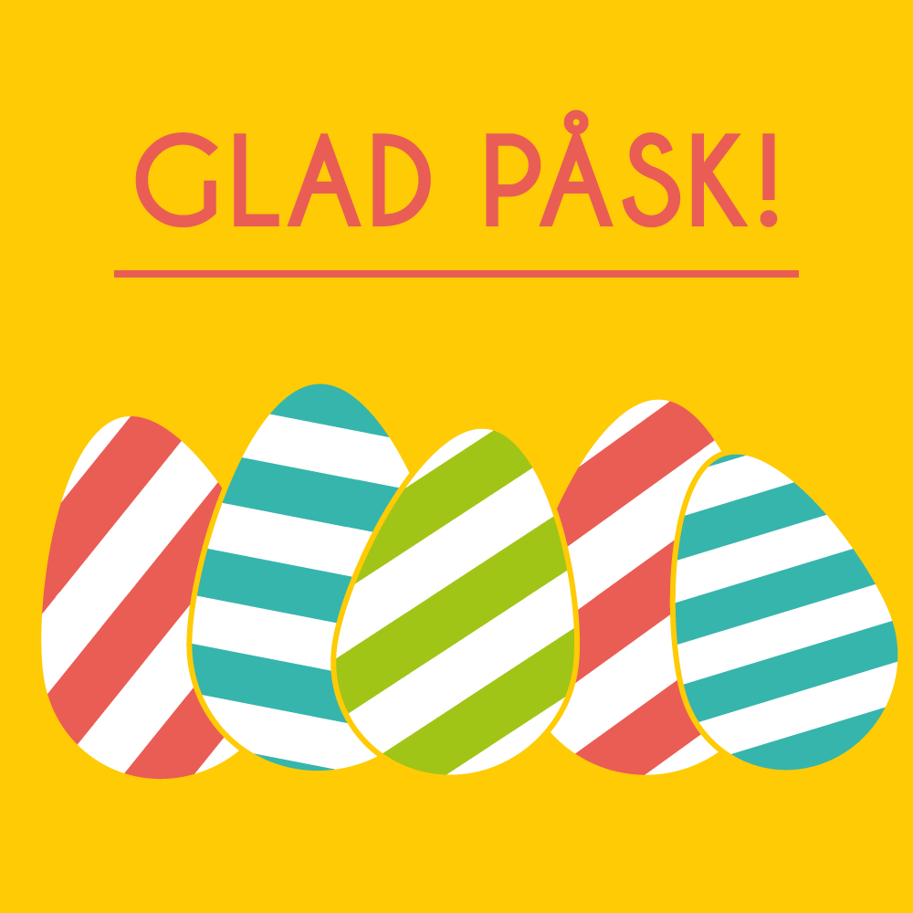

Hi! I'm Emma Klint
I’m a UX designer and developer with visual design experience who are passionate about gender equality and how the internet and other digital tool shapes us as humans. I’m also particullary interested in wearables, augmented reality and the quantified self. I’m currently studying Media Technology and Interaction Design at the Royal Institute of Technology in Stockholm and I will graduate in 2018.


 






